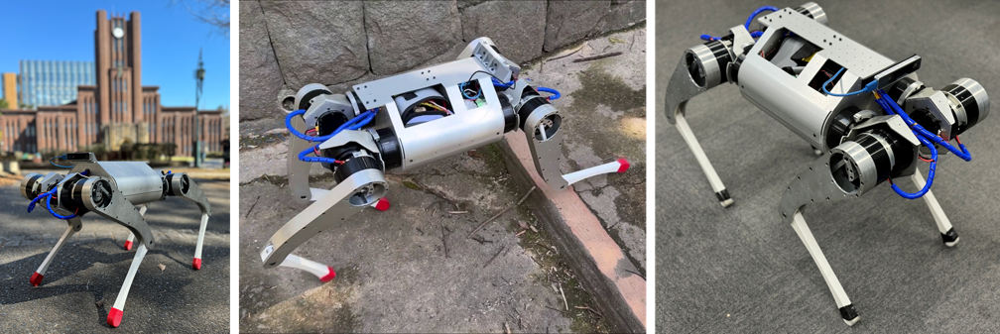

MEVITA - Open Source Bipedal Robot

- K. Kawaharazuka, S. Sawaguchi, A. Iwata, K. Yoneda, T. Suzuki, K. Okada
MEVITA: Open-Source Bipedal Robot Assembled from E-Commerce Components via Sheet Metal Welding, in Humanoids2025, 2025, (The first two authors contributed equally to this work)
[Arxiv Link] [Project Page] [Video]
MEVIUS - Open Source Quadruped Robot

- K. Kawaharazuka, S. Inoue, T. Suzuki, S. Yuzaki, S. Sawaguchi, K. Okada, M. Inaba
MEVIUS: A Quadruped Robot Easily Constructed through E-Commerce with Sheet Metal Welding and Machining, in 2024 IEEE-RAS International Conference on Humanoid Robots (HUMANOIDS2024), pp. 631-636, 2024
[Paper Link] [Arxiv Link] [Project Page] [Source Code] [Video]
CubiX - Mobile Wire-Driven Robot

- S. Inoue, K. Kawaharazuka, T. Suzuki, S. Yuzaki, K. Okada, M. Inaba
Overcoming Physical Limitations Utilizing the Surrounding Environment with a Wire-Driven Multipurpose Robot, Advanced Robotics Research (ADRR), vol. 1, no. 1, pp. 202400021, 2025
[Paper Link] [Project Page] [Video] - S. Inoue, K. Kawaharazuka, K. Yoneda, S. Yuzaki, Y. Sahara, T. Suzuki, K. Okada
An RGB-D Camera-Based Multi-Small Flying Anchors Control for Wire-Driven Robots Connecting to the Environment, in 2025 IEEE/RSJ International Conference on Intelligent Robots and Systems (IROS2025), 2025
[Arxiv Link] [Project Page] [Video] - S. Inoue, K. Kawaharazuka, T. Suzuki, S. Yuzaki, Y. Ribayashi, Y. Sahara, K. Okada
CubiXMusashi: Fusion of Wire-Driven CubiX and Musculoskeletal Humanoid Musashi toward Unlimited Performance, in 2024 IEEE-RAS International Conference on Humanoid Robots (HUMANOIDS2024), pp. 274-279, 2024, Mike Stillman Award
[Paper Link] [Arxiv Link] [Project Page] [Video] - S. Inoue, K. Kawaharazuka, T. Suzuki, S. Yuzaki, K. Okada, M. Inaba
CubiX: Portable Wire-Driven Parallel Robot Connecting to and Utilizing the Environment, in 2024 IEEE/RSJ International Conference on Intelligent Robots and Systems (IROS2024), pp. 1296-1301, 2024, SICE International Young Authors Award (SIYA-IROS2024), IEEE RAS Japan Joint Chapter Young Award (2024)
[Paper Link] [Arxiv Link] [Project Page] [Video]
SAQIEL - Ultra-Light and Safe Manipulator

- T. Suzuki, M. Bando, K. Kawaharazuka, K. Okada, M. Inaba
SAQIEL: Ultra-Light and Safe Manipulator with Passive 3D Wire Alignment Mechanism, IEEE Robotics and Automation Letters (RAL), vol. 9, no. 4, pp. 3720-3727, 2024, (presented at IROS2024)
[Paper Link] [Arxiv Link] [Project Page] [Video] - K. Kawaharazuka, S. Yoshimura, T. Suzuki, K. Okada, M. Inaba
Design Optimization of Wire Arrangement With Variable Relay Points in Numerical Simulation for Tendon-Driven Robots, IEEE Robotics and Automation Letters (RAL), vol. 9, no. 2, pp. 1388-1395, 2024, (presented at IROS2024)
[Paper Link] [Arxiv Link] [Project Page] [Video] - T. Suzuki, K. Kawaharazuka, K. Okada
A Universal Wire Testing Machine for Enhancing the Performance of Wire-Driven Robots, in Humanoids2025, 2025
[Arxiv Link] [Project Page]
RAMIEL - Jumping Robot

- K. Kawaharazuka, T. Suzuki, K. Okada, M. Inaba
Continuous Jumping of a Parallel Wire-Driven Monopedal Robot RAMIEL Using Reinforcement Learning, in 2022 IEEE-RAS International Conference on Humanoid Robots (HUMANOIDS2022), pp. 759-764, 2022
[Paper Link] [Arxiv Link] [Video] - T. Suzuki, Y. Toshimitsu, Y. Nagamatsu, K. Kawaharazuka, A. Miki, Y. Ribayashi, M. Bando, K. Kojima, Y. Kakiuchi, K. Okada, M. Inaba
RAMIEL: A Parallel-Wire Driven Monopedal Robot for High and Continuous Jumping, in 2022 IEEE/RSJ International Conference on Intelligent Robots and Systems (IROS2022), pp. 5017-5024, 2022, SICE International Young Authors Award (SIYA-IROS2022)
[Paper Link] [Arxiv Link] [Project Page] [Video]
Vlimb - High-Power Wearable Fifth Limb
- S. Sawaguchi, T. Suzuki, A. Miki, K. Kawaharazuka, S. Yuzaki, S. Yoshimura, Y. Ribayashi, K. Okada, M. Inaba
Vlimb: A Wire-Driven Wearable Robot for Bodily Extension, Balancing Powerfulness and Reachability, in 2024 IEEE-RAS International Conference on Humanoid Robots (HUMANOIDS2024), pp. 851-857, 2024
[Paper Link] [Arxiv Link] [Video]
Kangaroo - Biomimetic Jumping Robot

- K. Kawaharazuka, S. Yoshimura, T. Suzuki, K. Okada, M. Inaba
Design Optimization of Wire Arrangement With Variable Relay Points in Numerical Simulation for Tendon-Driven Robots, IEEE Robotics and Automation Letters (RAL), vol. 9, no. 2, pp. 1388-1395, 2024, (presented at IROS2024)
[Paper Link] [Arxiv Link] [Project Page] [Video] - S. Yoshimura, T. Suzuki, M. Bando, S. Yuzaki, K. Kawaharazuka, K. Okada, M. Inaba
Design Method of a Kangaroo Robot with High Power Legs and an Articulated Soft Tail, in 2023 IEEE/RSJ International Conference on Intelligent Robots and Systems (IROS2023), pp. 6631-6638, 2023
[Paper Link] [Arxiv Link]
Musashi - Component Modularized Musculoskeletal Humanoid

- K. Kawaharazuka, T. Hattori, K. Yoneda, K. Okada
PIMBS: Efficient Body Schema Learning for Musculoskeletal Humanoids with Physics-Informed Neural Networks, IEEE Robotics and Automation Letters (RAL), vol. 10, no. 7, pp. 7611-7618, 2025, (presented at ICRA2026)
[Paper Link] [Arxiv Link] [Project Page] - K. Kawaharazuka, K. Okada, M. Inaba
GeMuCo: Generalized Multisensory Correlational Model for Body Schema Learning, IEEE Robotics and Automation Magazine (RAM), vol. 32, no. 2, pp. 80-98, 2024, (presented at ICRA2025)
[Paper Link] [Arxiv Link] - K. Kawaharazuka, K. Okada, M. Inaba
Deep Predictive Model Learning with Parametric Bias: Handling Modeling Difficulties and Temporal Model Changes, IEEE Robotics and Automation Magazine (RAM), vol. 31, no. 4, pp. 81-99, 2023, (presented at ICRA2023)
[Paper Link] [Arxiv Link] - Y. Omura, K. Kawaharazuka, Y. Nagamatsu, Y. Koga, M. Nishiura, Y. Toshimitsu, Y. Asano, K. Okada, K. Kawasaki, M. Inaba
Human-mimetic binaural ear design and sound source direction estimation for task realization of musculoskeletal humanoids, Robomech Journal, vol. 9, no. 17, pp. 1-15, 2022
[Paper Link] [Arxiv Link] [Video] - K. Kawaharazuka, M. Nishiura, Y. Toshimitsu, Y. Omura, Y. Koga, Y. Asano, K. Okada, K. Kawasaki, M. Inaba
Robust Continuous Motion Strategy Against Muscle Rupture using Online Learning of Redundant Intersensory Networks for Musculoskeletal Humanoids, Robotics and Autonomous Systems (RAS), vol. 152, pp. 1-14, 2022
[Paper Link] [Arxiv Link] [Video] - K. Kawaharazuka, M. Nishiura, Y. Koga, Y. Omura, Y. Toshimitsu, Y. Asano, K. Okada, K. Kawasaki, M. Inaba
Automatic Grouping of Redundant Sensors and Actuators Using Functional and Spatial Connections: Application to Muscle Grouping for Musculoskeletal Humanoids, IEEE Robotics and Automation Letters (RAL), vol. 6, no. 2, pp. 1981-1988, 2021, (presented at ICRA2021)
[Paper Link] [Arxiv Link] [Video] - K. Kawaharazuka, K. Tsuzuki, Y. Koga, Y. Omura, T. Makabe, K. Shinjo, M. Onitsuka, Y. Nagamatsu, Y. Asano, K. Okada, K. Kawasaki, M. Inaba
Toward Autonomous Driving by Musculoskeletal Humanoids: Study of Developed Hardware and Learning-Based Software, IEEE Robotics and Automation Magazine (RAM), vol. 27, no. 3, pp. 84-96, 2020, (presented at ICRA2021)
[Paper Link] [Arxiv Link] [Video] - K. Kawaharazuka, K. Tsuzuki, M. Onitsuka, Y. Asano, K. Okada, K. Kawasaki, M. Inaba
Object Recognition, Dynamic Contact Simulation, Detection, and Control of the Flexible Musculoskeletal Hand Using a Recurrent Neural Network With Parametric Bias, IEEE Robotics and Automation Letters (RAL), vol. 5, no. 3, pp. 4580-4587, 2020, (presented at IROS2020)
[Paper Link] [Arxiv Link] [Video] - K. Kawaharazuka, N. Hiraoka, K. Tsuzuki, M. Onitsuka, Y. Asano, K. Okada, K. Kawasaki, M. Inaba
Estimation and Control of Motor Core Temperature with Online Learning of Thermal Model Parameters: Application to Musculoskeletal Humanoids, IEEE Robotics and Automation Letters (RAL), vol. 5, no. 3, pp. 4273-4280, 2020, (presented at IROS2020)
[Paper Link] [Arxiv Link] - K. Kawaharazuka, K. Tsuzuki, M. Onitsuka, Y. Asano, K. Okada, K. Kawasaki, M. Inaba
Musculoskeletal AutoEncoder: A Unified Online Acquisition Method of Intersensory Networks for State Estimation, Control, and Simulation of Musculoskeletal Humanoids, IEEE Robotics and Automation Letters (RAL), vol. 5, no. 2, pp. 2411-2418, 2020, (presented at ICRA2020)
[Paper Link] [Arxiv Link] [Video] - K. Kawaharazuka, K. Tsuzuki, S. Makino, M. Onitsuka, Y. Asano, K. Okada, K. Kawasaki, M. Inaba
Long-time Self-body Image Acquisition and its Application to the Control of Musculoskeletal Structures, IEEE Robotics and Automation Letters (RAL), vol. 4, no. 3, pp. 2965-2972, 2019, (presented at IROS2019)
[Paper Link] [Arxiv Link] [Video] - K. Kawaharazuka, S. Inoue, Y. Sahara, K. Yoneda, T. Suzuki, K. Okada
Design Optimization of Three-Dimensional Wire Arrangement Considering Wire Crossings for Tendon-driven Robots, in 2025 IEEE/RSJ International Conference on Intelligent Robots and Systems (IROS2025), 2025
[Arxiv Link] [Project Page] [Video] - Y. Ribayashi, K. Kawaharazuka, Y. Toshimitsu, D. Kusuyama, A. Miki, K. Shinjo, M. Bando, T. Suzuki, Y. Kojio, K. Okada, M. Inaba
Design of Robot Foot with Outer Edge Measurement Structure and Chair Rotation Motion by Friction Control, in 2022 IEEE-RAS International Conference on Humanoid Robots (HUMANOIDS2022), pp. 314-321, 2022, (Top 7 Best Oral Paper Presentation)
[Paper Link] - K. Kawaharazuka, K. Okada, M. Inaba
Online Learning Feedback Control Considering Hysteresis for Musculoskeletal Structures, in 2022 IEEE/RSJ International Conference on Intelligent Robots and Systems (IROS2022), pp. 5767-5773, 2022
[Paper Link] [Arxiv Link] [Video] - K. Kawaharazuka, Y. Ribayashi, A. Miki, Y. Toshimitsu, T. Suzuki, K. Okada, M. Inaba
Learning of Balance Controller Considering Changes in Body State for Musculoskeletal Humanoids, in 2022 IEEE/RSJ International Conference on Intelligent Robots and Systems (IROS2022), pp. 5809-5816, 2022
[Paper Link] [Arxiv Link] [Video] - Y. Toshimitsu, K. Kawaharazuka, A. Miki, K. Okada, M. Inaba
DIJE: Dense Image Jacobian Estimation for Robust Robotic Self-Recognition and Visual Servoing, in 2022 IEEE/RSJ International Conference on Intelligent Robots and Systems (IROS2022), pp. 2219-2226, 2022
[Paper Link] [Video] - Y. Ribayashi, K. Kawaharazuka, Y. Toshimitsu, D. Kusuyama, A. Miki, K. Shinjo, M. Bando, T. Suzuki, Y. Kojio, K. Okada, M. Inaba
Imitation Behavior of the Outer Edge of the Foot by Humanoids Using a Simplified Contact State Representation, in 2022 IEEE/RSJ International Conference on Intelligent Robots and Systems (IROS2022), pp. 4243-4249, 2022
[Paper Link] - K. Kawaharazuka, Y. Toshimitsu, M. Nishiura, Y. Koga, Y. Omura, Y. Asano, K. Okada, K. Kawasaki, M. Inaba
Design Optimization of Musculoskeletal Humanoids with Maximization of Redundancy to Compensate for Muscle Rupture, in 2021 IEEE/RSJ International Conference on Intelligent Robots and Systems (IROS2021), pp. 3204-3210, 2021
[Paper Link] [Arxiv Link] [Video] - K. Kawaharazuka, N. Hiraoka, Y. Koga, M. Nishiura, Y. Omura, Y. Asano, K. Okada, K. Kawasaki, M. Inaba
Online Learning of Danger Avoidance for Complex Structures of Musculoskeletal Humanoids and Its Applications, in 2020 IEEE-RAS International Conference on Humanoid Robots (HUMANOIDS2020), pp. 349-355, 2021
[Paper Link] - K. Kawaharazuka, Y. Koga, M. Nishiura, Y. Omura, Y. Asano, K. Okada, K. Kawasaki, M. Inaba
Motion Modification Method of Musculoskeletal Humanoids by Human Teaching Using Muscle-Based Compensation Control, in 2020 IEEE-RAS International Conference on Humanoid Robots (HUMANOIDS2020), pp. 83-89, 2021
[Paper Link] [Arxiv Link] [Video] - K. Kawaharazuka, M. Nishiura, S. Nakashima, Y. Toshimitsu, Y. Omura, Y. Koga, Y. Asano, K. Okada, K. Kawasaki, M. Inaba
Stability Recognition with Active Vibration for Bracing Behaviors and Motion Extensions Using Environment in Musculoskeletal Humanoids, in 2021 IEEE International Conference on Soft Robotics (ROBOSOFT2021), pp. 126-133, 2021
[Paper Link] - K. Kawaharazuka, Y. Koga, K. Tsuzuki, M. Onitsuka, Y. Asano, K. Okada, K. Kawasaki, M. Inaba
Exceeding the Maximum Speed Limit of the Joint Angle for the Redundant Tendon-driven Structures of Musculoskeletal Humanoids, in 2020 IEEE/RSJ International Conference on Intelligent Robots and Systems (IROS2020), pp. 3585-3590, 2020
[Paper Link] [Arxiv Link] - K. Kawaharazuka, Y. Koga, K. Tsuzuki, M. Onitsuka, Y. Asano, K. Okada, K. Kawasaki, M. Inaba
Applications of Stretch Reflex for the Upper Limb of Musculoskeletal Humanoids: Protective Behavior, Postural Stability, and Active Induction, in 2020 IEEE/RSJ International Conference on Intelligent Robots and Systems (IROS2020), pp. 3598-3603, 2020
[Paper Link] [Arxiv Link] - K. Kawaharazuka, K. Tsuzuki, M. Onitsuka, Y. Asano, K. Okada, K. Kawasaki, M. Inaba
Stable Tool-Use with Flexible Musculoskeletal Hands by Learning the Predictive Model of Sensor State Transition, in 2020 IEEE International Conference on Robotics and Automation (ICRA2020), pp. 4572-4578, 2020
[Paper Link] [Arxiv Link] [Video] - K. Kawaharazuka, S. Makino, K. Tsuzuki, M. Onitsuka, Y. Nagamatsu, K. Shinjo, T. Makabe, Y. Asano, K. Okada, K. Kawasaki, M. Inaba
Component Modularized Design of Musculoskeletal Humanoid Platform Musashi to Investigate Learning Control Systems, in 2019 IEEE/RSJ International Conference on Intelligent Robots and Systems (IROS2019), pp. 7294-7301, 2019
[Paper Link] [Arxiv Link] [Video] - K. Kawaharazuka, K. Tsuzuki, S. Makino, M. Onitsuka, K. Shinjo, Y. Asano, K. Okada, K. Kawasaki, M. Inaba
Task-specific Self-body Controller Acquisition by Musculoskeletal Humanoids: Application to Pedal Control in Autonomous Driving, in 2019 IEEE/RSJ International Conference on Intelligent Robots and Systems (IROS2019), pp. 813-818, 2019
[Paper Link] [Arxiv Link] [Video] - K. Shinjo, K. Kawaharazuka, Y. Asano, S. Nakashima, S. Makino, M. Onitsuka, K. Tsuzuki, K. Okada, K. Kawasaki, M. Inaba
Foot with a Core-shell Structural Six-axis Force Sensor for Pedal Depressing and Recovering from Foot Slipping during Pedal Pushing Toward Autonomous Driving by Humanoids, in 2019 IEEE/RSJ International Conference on Intelligent Robots and Systems (IROS2019), pp. 3049-3054, 2019
[Paper Link] - K. Kawaharazuka, K. Tsuzuki, M. Onitsuka, Y. Koga, Y. Omura, Y. Asano, K. Okada, K. Kawasaki, M. Inaba
Reflex-based Motion Strategy of Musculoskeletal Humanoids under Environmental Contact Using Muscle Relaxation Control, in 2019 IEEE-RAS International Conference on Humanoid Robots (HUMANOIDS2019), pp. 114-119, 2019
[Paper Link] - S. Makino, K. Kawaharazuka, M. Kawamura, A. Fujii, T. Makabe, M. Onitsuka, Y. Asano, K. Okada, K. Kawasaki, M. Inaba
Five-Fingered Hand with Wide Range of Thumb Using Combination of Machined Springs and Variable Stiffness Joints, in 2018 IEEE/RSJ International Conference on Intelligent Robots and Systems (IROS2018), pp. 4562-4567, 2018, IEEE RAS Japan Joint Chapter Young Award (2018), IROS ICROS Best Application Paper Award 2018 Finalists
[Paper Link] [Arxiv Link] [Video]
MusashiWheeled - Wheeled Musculoskeletal Humanoid

- K. Kawaharazuka, K. Okada, M. Inaba
Deep Predictive Model Learning with Parametric Bias: Handling Modeling Difficulties and Temporal Model Changes, IEEE Robotics and Automation Magazine (RAM), vol. 31, no. 4, pp. 81-99, 2023, (presented at ICRA2023)
[Paper Link] [Arxiv Link] - K. Kawaharazuka, A. Miki, M. Bando, K. Okada, M. Inaba
Dynamic Cloth Manipulation Considering Variable Stiffness and Material Change Using Deep Predictive Model With Parametric Bias, Frontiers in Neurorobotics, vol. 16, pp. 1-16, 2022
[Paper Link] [Arxiv Link] [Video] - K. Kawaharazuka, A. Miki, Y. Toshimitsu, K. Okada, M. Inaba
Adaptive Body Schema Learning System Considering Additional Muscles for Musculoskeletal Humanoids, IEEE Robotics and Automation Letters (RAL), vol. 7, no. 2, pp. 3459-3466, 2022, (presented at ICRA2022)
[Paper Link] [Arxiv Link] [Video] - S. Yuzaki, A. Miki, M. Bando, S. Yoshimura, T. Suzuki, K. Kawaharazuka, K. Okada, M. Inaba
Fusion of Body and Environment with Movable Carabiners for Wire-Driven Robots Toward Expansion of Physical Capabilities, in 2023 IEEE-RAS International Conference on Humanoid Robots (HUMANOIDS2023), pp. 679-685, 2023
[Paper Link] - A. Miki, K. Kawaharazuka, M. Bando, K. Okada, K. Kawasaki, M. Inaba
System Architecture and Real-World Task Realization of Musculoskeletal Wheeled Robot Musashi-W with Various Hardware Components, in 18th International Conference on Intelligent Autonomous Systems (IAS2023), pp. 109-122, 2023
[Paper Link] - K. Kawaharazuka, A. Miki, M. Bando, T. Suzuki, Y. Ribayashi, Y. Toshimitsu, Y. Nagamatsu, K. Okada, M. Inaba
Hardware Design and Learning-Based Software Architecture of Musculoskeletal Wheeled Robot Musashi-W for Real-World Applications, in 2022 IEEE-RAS International Conference on Humanoid Robots (HUMANOIDS2022), pp. 413-419, 2022, Best Interactive Paper Award Finalist
[Paper Link] [Arxiv Link] [Video]
MusashiOLegs - Highly-Biomimetic Modularized Legs

- K. Kawaharazuka, K. Okada, M. Inaba
Realization of Seated Walk by a Musculoskeletal Humanoid with Buttock-Contact Sensors From Human Constrained Teaching, in 2022 IEEE/RSJ International Conference on Intelligent Robots and Systems (IROS2022), pp. 5774-5780, 2022
[Paper Link] [Arxiv Link] [Video] - M. Onitsuka, M. Nishiura, K. Kawaharazuka, K. Tsuzuki, Y. Toshimitsu, Y. Omura, Y. Asano, K. Okada, K. Kawasaki, M. Inaba
Development of Musculoskeletal Legs with Planar Interskeletal Structures to Realize Human Comparable Moving Function, in 2020 IEEE-RAS International Conference on Humanoid Robots (HUMANOIDS2020), pp. 17-24, 2021, Best Oral Paper Award, Finalists of Mike Stilman Paper Award
[Paper Link] [Arxiv Link] [Video]
MusashiLarm - Left Arm of Musashi
- K. Kawaharazuka, K. Okada, M. Inaba
Deep Predictive Model Learning with Parametric Bias: Handling Modeling Difficulties and Temporal Model Changes, IEEE Robotics and Automation Magazine (RAM), vol. 31, no. 4, pp. 81-99, 2023, (presented at ICRA2023)
[Paper Link] [Arxiv Link] - K. Kawaharazuka, K. Okada, M. Inaba
Adaptive Robotic Tool-Tip Control Learning Considering Online Changes in Grasping State, IEEE Robotics and Automation Letters (RAL), vol. 6, no. 3, pp. 5992-5999, 2021, (presented at IROS2021)
[Paper Link] [Arxiv Link] [Video] - K. Kawaharazuka, Y. Kawamura, K. Okada, M. Inaba
Imitation Learning with Additional Constraints on Motion Style using Parametric Bias, IEEE Robotics and Automation Letters (RAL), vol. 6, no. 3, pp. 5897-5904, 2021, (presented at IROS2021)
[Paper Link] [Arxiv Link] [Video] - Y. Toshimitsu, K. Kawaharazuka, M. Nishiura, Y. Koga, Y. Omura, Y. Asano, K. Okada, K. Kawasaki, M. Inaba
Biomimetic Operational Space Control for Musculoskeletal Humanoid Optimizing across Muscle Activation and Joint Nullspace, in 2021 IEEE International Conference on Robotics and Automation (ICRA2021), pp. 1184-1190, 2021
[Paper Link] [Video]
TWIMP - Two-Wheeled Inverted Musculoskeletal Pendulum

- K. Kawaharazuka, T. Makabe, S. Makino, K. Tsuzuki, Y. Nagamatsu, Y. Asano, T. Shirai, F. Sugai, K. Okada, K. Kawasaki, M. Inaba
TWIMP: Two-Wheel Inverted Musculoskeletal Pendulum as a Learning Control Platform in the Real World with Environmental Physical Contact, in 2018 IEEE-RAS International Conference on Humanoid Robots (HUMANOIDS2018), pp. 784-790, 2018, (The first two authors contributed equally to this work)
[Paper Link] [Arxiv Link] [Video]
Kengoro - Highly-Biomimetic Musculoskeletal Humanoid
- Y. Koga, K. Kawaharazuka, Y, Toshimitsu, M. Nishiura, Y. Omura, Y. Asano, K. Okada, K. Kawasaki, M. Inaba
Self-Body Image Acquisition and Posture Generation with Redundancy using Musculoskeletal Humanoid Shoulder Complex for Object Manipulation, IEEE Robotics and Automation Letters (RAL), vol. 6, no. 4, pp. 6686-6692, 2021, (presented at IROS2021)
[Paper Link] [Arxiv Link] [Video] - K. Kawaharazuka, M. Nishiura, Y. Koga, Y. Omura, Y. Toshimitsu, Y. Asano, K. Okada, K. Kawasaki, M. Inaba
Automatic Grouping of Redundant Sensors and Actuators Using Functional and Spatial Connections: Application to Muscle Grouping for Musculoskeletal Humanoids, IEEE Robotics and Automation Letters (RAL), vol. 6, no. 2, pp. 1981-1988, 2021, (presented at ICRA2021)
[Paper Link] [Arxiv Link] [Video] - K. Kawaharazuka, S. Makino, M. Kawamura, S. Nakashima, Y. Asano, K. Okada, M. Inaba
Human Mimetic Forearm and Hand Design with a Radioulnar Joint and Flexible Machined Spring Finger for Human Skillful Motions, Journal of Robotics and Mechatronics (JRM), vol. 32, no. 2, pp. 445-458, 2020, (The first two authors contributed equally to this work)
[Paper Link] [Arxiv Link] [Video] - K. Kawaharazuka, S. Makino, M. Kawamura, Y. Asano, K. Okada, M. Inaba
Online Learning of Joint-Muscle Mapping using Vision in Tendon-driven Musculoskeletal Humanoids, IEEE Robotics and Automation Letters (RAL), vol. 3, no. 2, pp. 772-779, 2018, (presented at ICRA2018)
[Paper Link] [Arxiv Link] [Video] - K. Kawaharazuka, M. Kawamura, S. Makino, Y. Asano, K. Okada, M. Inaba
Antagonist Inhibition Control in Redundant Tendon-driven Structures Based on Human Reciprocal Innervation for Wide Range Limb Motion of Musculoskeletal Humanoids, IEEE Robotics and Automation Letters (RAL), vol. 2, no. 4, pp. 2119-2126, 2017, (presented at IROS2017)
[Paper Link] [Arxiv Link] [Video] - Y. Toshimitsu, K. Kawaharazuka, K. Tsuzuki, M. Onitsuka M. Nishiura, Y. Koga, Y. Omura, M. Tomita, Y. Asano, K. Okada, K. Kawasaki, M. Inaba
Biomimetic Control Scheme for Musculoskeletal Humanoids Based on Motor Directional Tuning in the Brain, in 2020 IEEE/RSJ International Conference on Intelligent Robots and Systems (IROS2020), pp. 7784-7791, 2020
[Paper Link] [Video] - Y. Koga, K. Kawaharazuka, M. Onitsuka, T. Makabe, K. Tsuzuki, Y. Omura, Y. Asano, K. Okada, M. Inaba
Modification of Muscle Antagonistic Relations and Hand Trajectory on the Dynamic Motion of Musculoskeletal Humanoid, in 2019 IEEE-RAS International Conference on Humanoid Robots (HUMANOIDS2019), pp. 632-637, 2019
[Paper Link] [Arxiv Link] [Video] - Y. Asano, S. Nakashima, I. Yanokura, M. Onitsuka, K. Kawaharazuka, K. Tsuzuki, Y. Koga, Y. Omura, K. Okada, M. Inaba
Ankle-Hip-Stepping Stabilizer on Tendon-Driven Humanoid Kengoro by Integration of Muscle-Joint-Work Space Controllers for Knee-Stretched Humanoid Balance, in 2019 IEEE-RAS International Conference on Humanoid Robots (HUMANOIDS2019), pp. 397-402, 2019
[Paper Link] - K. Kawaharazuka, S. Makino, M. Kawamura, Y. Asano, K. Okada, M. Inaba
A Method of Joint Angle Estimation Using Only Relative Changes in Muscle Lengths for Tendon-driven Humanoids with Complex Musculoskeletal Structures, in 2018 IEEE-RAS International Conference on Humanoid Robots (HUMANOIDS2018), pp. 1128-1135, 2018
[Paper Link] [Arxiv Link] [Video] - T. Makabe, K. Kawaharazuka, K. Tsuzuki, K. Wada, S. Makino, M. Kawamura, A. Fujii, M. Onitsuka, Y. Asano, K. Okada, K. Kawasaki, M. Inaba
Development of Movable Binocular High-Resolution Eye-Camera Unit for Humanoid and the Evaluation of Looking Around Fixation Control and Object Recognition, in 2018 IEEE-RAS International Conference on Humanoid Robots (HUMANOIDS2018), pp. 840-845, 2018
[Paper Link] - K. Kawaharazuka, S. Makino, M. Kawamura, A. Fujii, Y. Asano, K. Okada, M. Inaba
Online Self-body Image Acquisition Considering Changes in Muscle Routes Caused by Softness of Body Tissue for Tendon-driven Musculoskeletal Humanoids, in 2018 IEEE/RSJ International Conference on Intelligent Robots and Systems (IROS2018), pp. 1711-1717, 2018
[Paper Link] [Arxiv Link] [Video] - K. Kawaharazuka, S. Makino, M. Kawamura, Y. Asano, Y. Kakiuchi, K. Okada, M. Inaba
Human Mimetic Forearm Design with Radioulnar Joint using Miniature Bone-muscle Modules and its Applications, in 2017 IEEE/RSJ International Conference on Intelligent Robots and Systems (IROS2017), pp. 4956-4962, 2017, IEEE RAS Japan Joint Chapter Young Award (2017)
[Paper Link] [Arxiv Link] [Video] - S. Makino, K. Kawaharazuka, M. Kawamura, Y. Asano, K. Okada, M. Inaba
High-power, flexible, robust hand: Development of musculoskeletal hand using machined springs and realization of self-weight supporting motion with humanoid, in 2017 IEEE/RSJ International Conference on Intelligent Robots and Systems (IROS2017), pp. 1187-1192, 2017
[Paper Link] [Arxiv Link] [Video] - Y. Asano, T. Kozuki, S. Ookubo, M. Kawamura, S. Nakashima, T. Katayama, Y. Iori, H. Toshinori, K. Kawaharazuka, S. Makino, Y. Kakiuchi, K. Okada, M. Inaba
Human Mimetic Musculoskeletal Humanoid Kengoro toward Real World Physically Interactive Actions, in 2016 IEEE-RAS International Conference on Humanoid Robots (HUMANOIDS2016), pp. 876-883, 2016, Best Interactive Paper Award Finalist
[Paper Link] [Video]
Chair-Type Asymmetrical Tripedal Robot
- S. Inoue, K. Kawaharazuka, K. Okada, M. Inaba
Body Design and Gait Generation of Chair-Type Asymmetrical Tripedal Low-rigidity Robot, in 2024 IEEE International Conference on Soft Robotics (ROBOSOFT2024), pp. 593-600, 2024
[Paper Link] [Arxiv Link] [Project Page] [Video]
ORS - Modular Robot with Lock Mechanism

- K. Kawaharazuka, T. Makabe, K. Okada, M. Inaba
Daily Assistive Modular Robot Design Based on Multi-Objective Black-Box Optimization, in 2023 IEEE/RSJ International Conference on Intelligent Robots and Systems (IROS2023), pp. 9970-9977, 2023
[Paper Link] [Arxiv Link] [Project Page] [Video] - H. Sato, K. Kawaharazuka, T. Makabe, K. Okada, M. Inaba
Online Estimation of Self-Body Deflection with Various Sensor Data Based on Directional Statistics, in 2023 IEEE/SICE International Symposium on System Integration (SII2023), pp. 1-8, 2023
[Paper Link] [Arxiv Link]
A0B - Manipulator with High-Speed Communication

- L. Wu, H. Jia, K. Kawaharazuka, H. Ishida, K. Okada
Dexterous Grasp Dataset Augmentation based on Grasp Synthesis with Fingertip Workspace Cloud and Contact-Aware Sampling, Advanced Robotics (AR), pp. 1-18, 2025
[Paper Link] - L. Wu, K. Kawaharazuka, S. Hasegawa, K. Okada, M. Inaba
Workspace-Based Precision Grasp Pose Generator for Multi-Fingered Robotic Hands, in 18th International Conference on Intelligent Autonomous Systems (IAS2023), pp. 379-392, 2023
[Paper Link]
Jaxon - High Power Humanoid
- A. Tang, T. Hiraoka, N. Hiraoka, F. Shi, K. Kawaharazuka, K. Kojima, K. Okada, M. Inaba
HumanMimic: Learning Natural Locomotion and Transitions for Humanoid Robot via Wasserstein Adversarial Imitation, in 2024 IEEE International Conference on Robotics and Automation (ICRA2024), pp. 13107-13114, 2024
[Paper Link] [Arxiv Link] [Video] - Y. Matsuura, K. Kawaharazuka, N. Hiraoka, K. Kojima, K. Okada, M. Inaba
Development of a Whole-Body Work Imitation Learning System by a Biped and Bi-Armed Humanoid, in 2023 IEEE/RSJ International Conference on Intelligent Robots and Systems (IROS2023), pp. 10374-10381, 2023
[Paper Link] [Arxiv Link] [Project Page] [Video]
DualPanda - Dual-Arm Manipulator

- K. Kawaharazuka, K. Okada, M. Inaba
Robotic Constrained Imitation Learning for the Peg Transfer Task in Fundamentals of Laparoscopic Surgery, in 2024 IEEE International Conference on Robotics and Automation (ICRA2024), pp. 606-612, 2024
[Paper Link] [Arxiv Link] [Project Page] [Video]
HIRO - Dual-Arm Manipulator

- Y. Iwata, S. Hasegawa, K. Kawaharazuka, K. Okada, M. Inaba
Integrative Wrapping System for a Dual-Arm Humanoid Robot, in 2024 IEEE-RAS International Conference on Humanoid Robots (HUMANOIDS2024), pp. 84-90, 2024, Kanako Miura Award
[Paper Link] [Arxiv Link]
MyCobot - Low-Cost Low-Rigidity Manipulator

- K. Kawaharazuka, K. Okada, M. Inaba
Deep Predictive Model Learning with Parametric Bias: Handling Modeling Difficulties and Temporal Model Changes, IEEE Robotics and Automation Magazine (RAM), vol. 31, no. 4, pp. 81-99, 2023, (presented at ICRA2023)
[Paper Link] [Arxiv Link] - K. Kawaharazuka, N. Kanazawa, K. Okada, M. Inaba
Self-Supervised Learning of Visual Servoing for Low-Rigidity Robots Considering Temporal Body Changes, IEEE Robotics and Automation Letters (RAL), vol. 7, no. 3, pp. 7881-7887, 2022, SICE International Young Authors Award (SIYA-IROS2022), (presented at IROS2022)
[Paper Link] [Arxiv Link] [Video] - S. Kim, N. Kanazawa, S. Hasegawa, K. Kawaharazuka, K. Okada
Front Hair Styling Robot System Using Path Planning for Root-Centric Strand Adjustment, in 2025 IEEE/SICE International Symposium on System Integration (SII2025), 2025, Best Student Paper Finalist
[Paper Link] [Arxiv Link] [Video] - K. Kawaharazuka, N. Kanazawa, Y. Obinata, K. Okada, M. Inaba
Daily Assistive View Control Learning of Low-Cost Low-Rigidity Robot via Large-Scale Vision-Language Model, in 2023 IEEE-RAS International Conference on Humanoid Robots (HUMANOIDS2023), pp. 452-457, 2023
[Paper Link] [Arxiv Link] [Video] - K. Kawaharazuka, N. Kanazawa, K. Okada, M. Inaba
Learning-Based Wiping Behavior of Low-Rigidity Robots Considering Various Surface Materials and Task Definitions, in 2022 IEEE-RAS International Conference on Humanoid Robots (HUMANOIDS2022), pp. 919-924, 2022
[Paper Link] [Arxiv Link] [Video]
KXR - Low-Rigidity Plastic-Made Humanoid

- K. Kawaharazuka, K. Okada, M. Inaba
GeMuCo: Generalized Multisensory Correlational Model for Body Schema Learning, IEEE Robotics and Automation Magazine (RAM), vol. 32, no. 2, pp. 80-98, 2024, (presented at ICRA2025)
[Paper Link] [Arxiv Link] - K. Kawaharazuka, K. Okada, M. Inaba
Robot Design Optimization with Rotational and Prismatic Joints Using Black-Box Multi-Objective Optimization, in 2024 IEEE/RSJ International Conference on Intelligent Robots and Systems (IROS2024), pp. 4571-4577, 2024
[Paper Link] [Arxiv Link] [Project Page] [Video] - K. Kawaharazuka, K. Okada, M. Inaba
Adaptive Whole-body Robotic Tool-use Learning on Low-rigidity Plastic-made Humanoids Using Vision and Tactile Sensors, in 2024 IEEE International Conference on Robotics and Automation (ICRA2024), pp. 583-589, 2024
[Paper Link] [Arxiv Link] [Project Page] [Video]
Fetch - Mobile Manipulator
- K. Kawaharazuka, Y. Obinata, N. Kanazawa, N. Tsukamoto, K. Okada, M. Inaba
Reflex-Based Open-Vocabulary Navigation without Prior Knowledge Using Omnidirectional Camera and Multiple Vision-Language Models, Advanced Robotics (AR), vol. 38, no. 18, pp. 1307-1317, 2024
[Paper Link] [Arxiv Link] [Project Page] [Video] - K. Kawaharazuka, Y. Obinata, N. Kanazawa, K. Okada, M. Inaba
Robotic Environmental State Recognition with Pre-Trained Vision-Language Models and Black-Box Optimization, Advanced Robotics (AR), vol. 38, no. 18, pp. 1255-1264, 2024
[Paper Link] [Arxiv Link] [Project Page] [Video] - K. Kawaharazuka, K. Okada, M. Inaba
Deep Predictive Model Learning with Parametric Bias: Handling Modeling Difficulties and Temporal Model Changes, IEEE Robotics and Automation Magazine (RAM), vol. 31, no. 4, pp. 81-99, 2023, (presented at ICRA2023)
[Paper Link] [Arxiv Link] - K. Kawaharazuka, Y. Obinata, N. Kanazawa, K. Okada, M. Inaba
Robotic State Recognition with Image-to-Text Retrieval Task of Pre-Trained Vision-Language Model and Black-Box Optimization, in 2024 IEEE-RAS International Conference on Humanoid Robots (HUMANOIDS2024), pp. 934-940, 2024
[Paper Link] [Arxiv Link] [Video] - K. Kawaharazuka, Y. Obinata, N. Kanazawa, K. Okada, M. Inaba
Robotic Applications of Pre-Trained Vision-Language Models to Various Recognition Behaviors, in 2023 IEEE-RAS International Conference on Humanoid Robots (HUMANOIDS2023), pp. 458-465, 2023
[Paper Link] [Arxiv Link] - Y. Obinata, K. Kawaharazuka, N. Kanazawa, N. Yamaguchi, N. Tsukamoto, I. Yanokura, S. Kitagawa, K. Shinjo, K. Okada, M. Inaba
Semantic Scene Difference Detection in Daily Life Patroling by Mobile Robots Using Pre-Trained Large-Scale Vision-Language Model, in 2023 IEEE/RSJ International Conference on Intelligent Robots and Systems (IROS2023), pp. 3228-3233, 2023, IEEE RAS Japan Joint Chapter Young Award (2023), SICE International Young Authors Award (SIYA-IROS2023)
[Paper Link] [Arxiv Link] - K. Kawaharazuka, Y. Obinata, N. Kanazawa, K. Okada, M. Inaba
VQA-based Robotic State Recognition Optimized with Genetic Algorithm, in 2023 IEEE International Conference on Robotics and Automation (ICRA2023), pp. 8306-8311, 2023
[Paper Link] [Arxiv Link] - K. Kawaharazuka, K. Shinjo, Y. Kawamura, K. Okada, M. Inaba
Environmentally Adaptive Control Including Variance Minimization Using Stochastic Predictive Network with Parametric Bias: Application to Mobile Robots, in 2021 IEEE/RSJ International Conference on Intelligent Robots and Systems (IROS2021), pp. 8381-8387, 2021
[Paper Link] [Arxiv Link] [Video] - K. Kawaharazuka, Y. Obinata, N. Kanazawa, K. Okada, M. Inaba
Binary State Recognition by Robots using Visual Question Answering of Pre-Trained Vision-Language Model, arXiv preprint arXiv:2310.16405, 2023
[Arxiv Link]
PR2 - Mobile Manipulator

- N. Kanazawa, K. Kawaharazuka, Y. Obinata, K. Okada, M. Inaba
Real-world cooking robot system from recipes based on food state recognition using foundation models and PDDL, Advanced Robotics (AR), vol. 38, no. 18, pp. 1318-1334, 2024
[Paper Link] [Arxiv Link] [Project Page] [Video] - S. Wakabayashi, K. Kawaharazuka, K. Okada, M. Inaba
Behavioral Learning of Dish Rinsing and Scrubbing based on Interruptive Direct Teaching Considering Assistance Rate, Advanced Robotics (AR), vol. 38, no. 15, pp. 1052-1065, 2024
[Paper Link] [Arxiv Link] [Project Page] [Video] - K. Kawaharazuka, K. Okada, M. Inaba
GeMuCo: Generalized Multisensory Correlational Model for Body Schema Learning, IEEE Robotics and Automation Magazine (RAM), vol. 32, no. 2, pp. 80-98, 2024, (presented at ICRA2025)
[Paper Link] [Arxiv Link] - K. Kawaharazuka, N. Kanazawa, Y. Obinata, K. Okada, M. Inaba
Continuous Object State Recognition for Cooking Robots Using Pre-Trained Vision-Language Models and Black-box Optimization, IEEE Robotics and Automation Letters (RAL), vol. 9, no. 5, pp. 4059-4066, 2024, (presented at Humanoids2024)
[Paper Link] [Arxiv Link] [Project Page] [Video] - K. Kawaharazuka, K. Okada, M. Inaba
Deep Predictive Model Learning with Parametric Bias: Handling Modeling Difficulties and Temporal Model Changes, IEEE Robotics and Automation Magazine (RAM), vol. 31, no. 4, pp. 81-99, 2023, (presented at ICRA2023)
[Paper Link] [Arxiv Link] - K. Kawaharazuka, K. Okada, M. Inaba
Adaptive Robotic Tool-Tip Control Learning Considering Online Changes in Grasping State, IEEE Robotics and Automation Letters (RAL), vol. 6, no. 3, pp. 5992-5999, 2021, (presented at IROS2021)
[Paper Link] [Arxiv Link] [Video] - K. Kawaharazuka, Y. Kawamura, K. Okada, M. Inaba
Imitation Learning with Additional Constraints on Motion Style using Parametric Bias, IEEE Robotics and Automation Letters (RAL), vol. 6, no. 3, pp. 5897-5904, 2021, (presented at IROS2021)
[Paper Link] [Arxiv Link] [Video] - Y. Obinata, H. Jia, K. Kawaharazuka, N. Kanazawa, K. Okada
Remote Life Support Robot Interface System for Global Task Planning and Local Action Expansion Using Foundation Models, in 2024 IEEE-RAS International Conference on Humanoid Robots (HUMANOIDS2024), pp. 738-743, 2024
[Paper Link] [Arxiv Link] [Video] - Open X-Embodiment Collaboration
Open X-Embodiment: Robotic Learning Datasets and RT-X Models, in 2024 IEEE International Conference on Robotics and Automation (ICRA2024), pp. 6892-6903, 2024, Best Conference Paper Award, Finalists of Best Paper Award in Robot Manipulation
[Paper Link] [Arxiv Link] [Project Page] - N. Kanazawa, K. Kawaharazuka, Y. Obinata, K. Okada, M. Inaba
Recognition of Heat-Induced Food State Changes by Time-Series Use of Vision-Language Model for Cooking Robot, in 18th International Conference on Intelligent Autonomous Systems (IAS2023), pp. 547-560, 2023
[Paper Link] [Arxiv Link]
HSR - Human Support Robot

- Y. Obinata, N. Kanazawa, K. Kawaharazuka, I. Yanokura, S. Kim, K. Okada, M. Inaba
Foundation Model based Open Vocabulary Task Planning and Executive System for General Purpose Service Robots, arXiv preprint arXiv:2308.03357, 2023
[Arxiv Link] [Video]
Spot - Quadruped Robot

- A. Ichikura, K. Kawaharazuka, Y. Obinata, K. Okada, M. Inaba
A Method for Selecting Scenes and Emotion-Based Descriptions for a Robot's Diary, in 32nd IEEE International Conference on Robot and Human Interactive Communication (ROMAN2023), pp. 1683-1688, 2023
[Paper Link] [Arxiv Link] - A. Ichikura, K. Kawaharazuka, Y. Obinata,, K. Shinjo, K. Okada, M. Inaba
Automatic Diary Generation System Including Information on Joint Experiences between Humans and Robots, in 18th International Conference on Intelligent Autonomous Systems (IAS2023), pp. 399-412, 2023
[Paper Link] [Arxiv Link]
aibo - Small Home Robot
- R. Watanabe, T. Miki, F. Shi, Y. Kadokawa, F. Bjelonic, K. Kawaharazuka, A. Cramariuc, M. Hutter
Learning Quiet Walking for a Small Home Robot, in 2025 IEEE International Conference on Robotics and Automation (ICRA2025), 2025
[Arxiv Link] [Project Page] [Video]